UI Explanation¶
This section contains an explanation of the various UI elements used to interact with the Taler-Odoo Payment System
This document is an explanation of the UI elements that you will interact with when using the Taler-Odoo Payment System add-on.
Installation of the add-on¶
{kind=link}
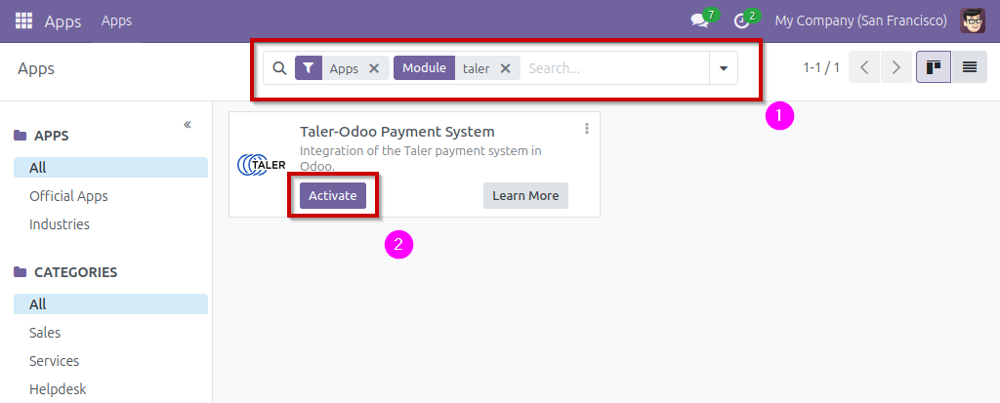
When you have copied the files of the payment_taler module in your Odoo instance’s directory, and setup the addons-path parameter, you can search for the payment_taler module (1) in the Odoo apps, and activate it (2). Activating the module is the same as installing it on your Odoo instance.
Taler payment provider setup¶
{kind=link}
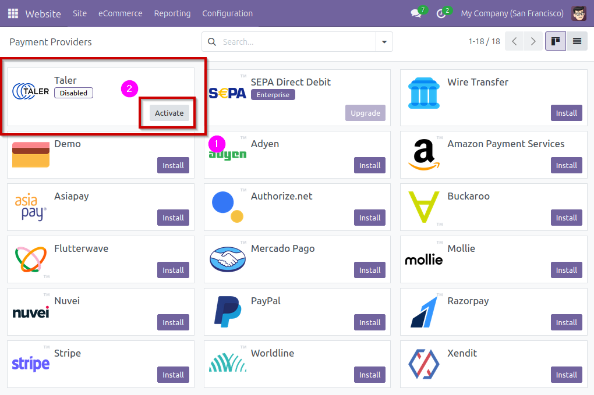
Once the module is activated, you can find the payments providers in
Website -> Configuration -> Online Payments -> Payment Providers.
In this list you can find the Taler payment provider (1) (disabled by default), and activate it (2).
Activating or clicking on the payment provider will lead you to the payment provider’s page.
{kind=link}
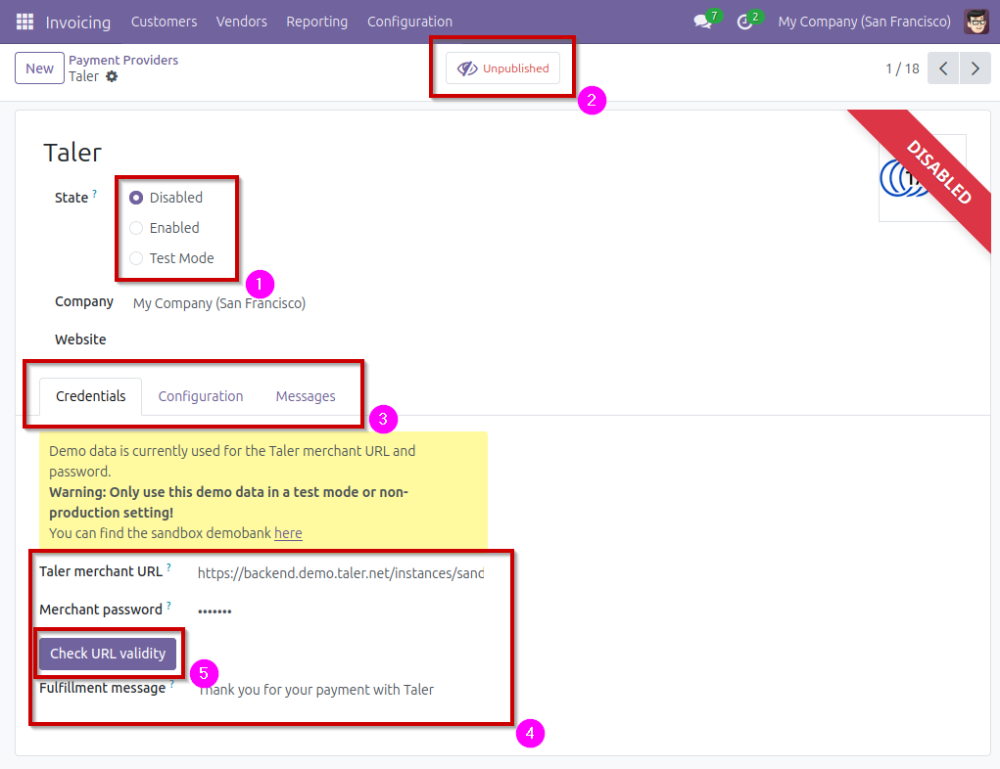
On this page, you can see the current status for the payment provider.
The payment provider can be
Disabled,Enabled, or inTest Mode. (1) (See documentation for more information).The payment provider can be
UnpublishedorPublished. (2) (See documentation for more information).
You can see three tabs: Credentials, Configuration,
Messages. For this setup, only the tab Credentials will be used (3).
In the credentials tab, you will have to setup the Taler merchant URL and the corresponding password for the Taler instance you would like to use (4).
After setting up the URL, you can press Check URL validity, this
will connect to the entered URL, and see if the accepted currencies is
compatible with Odoo’s currencies (5). (See user-guide for more
information.)
{kind=link}
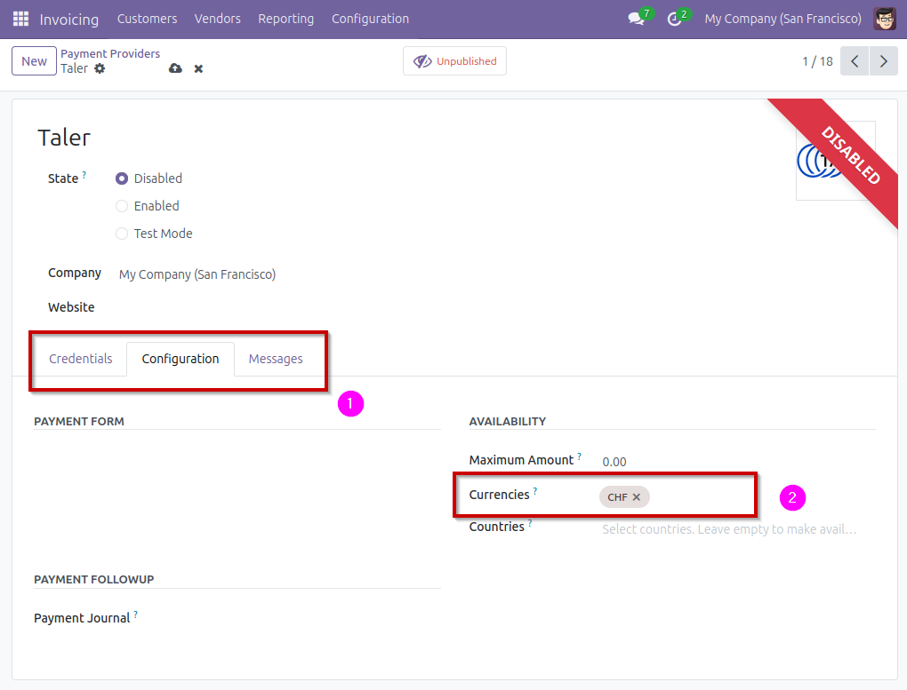
In the payment provider’s Configuration tab (1), you can find
the list of currencies that the payment provider will be able to use (2).
Online payments using Taler¶
{kind=link}
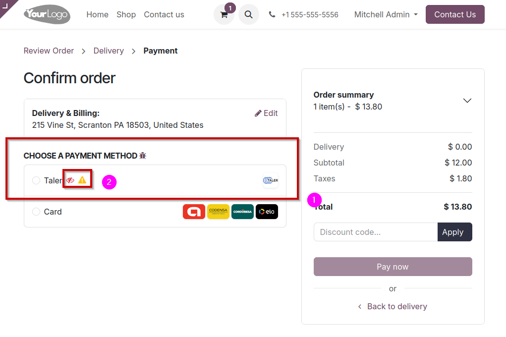
When a customer is ready to pay online for their cart, they will be able to choose which payment method to use. If the currencies are correctly set-up, Taler should be one of the options provided (1).
You might see symbols next to the payment method (2):
A striked-through eye means that this payment method can only be seen by an admin (generally used when testing a new payment provider).
A yellow warning sign means that the payment provider is in test mode. Avoid using the test mode in production.
{kind=link}
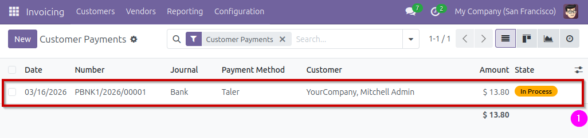
When the payment is complete, on the admin-side, you can navigate to
Invoicing -> Customers -> Payments to see the list of payments, and the most recent payment completed (1).
Trigger a refund for an online payment¶
Find the payment you would like to refund in the payment list, in
Invoicing -> Customers -> Payments, and click on the payment you’d
like to refund (1).
{kind=link}
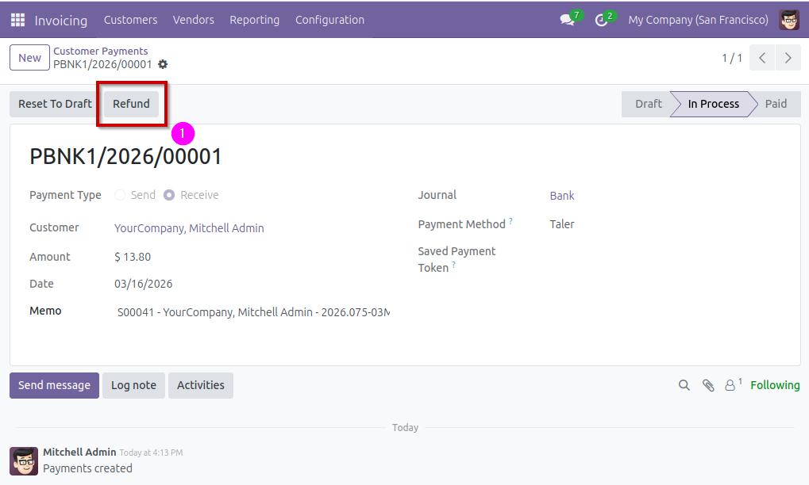
Click on the Refund button and confirm the amount you’d like to
refund (1).
This action will create a refund QR Code, and send it via email to the customer.
{kind=link}
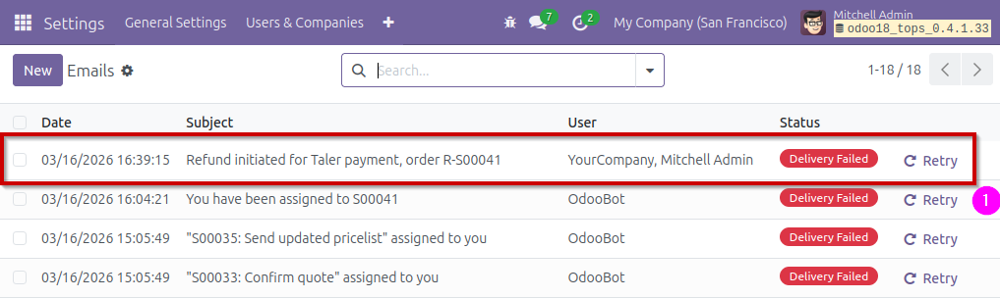
To see the email, navigate to Settings -> Technical -> Emails. This will display a list of emails, find and click on the one you want to check (1).
You may need to activate Odoo’s
Developermode to access this tab (it is found in the settings).
{kind=link}
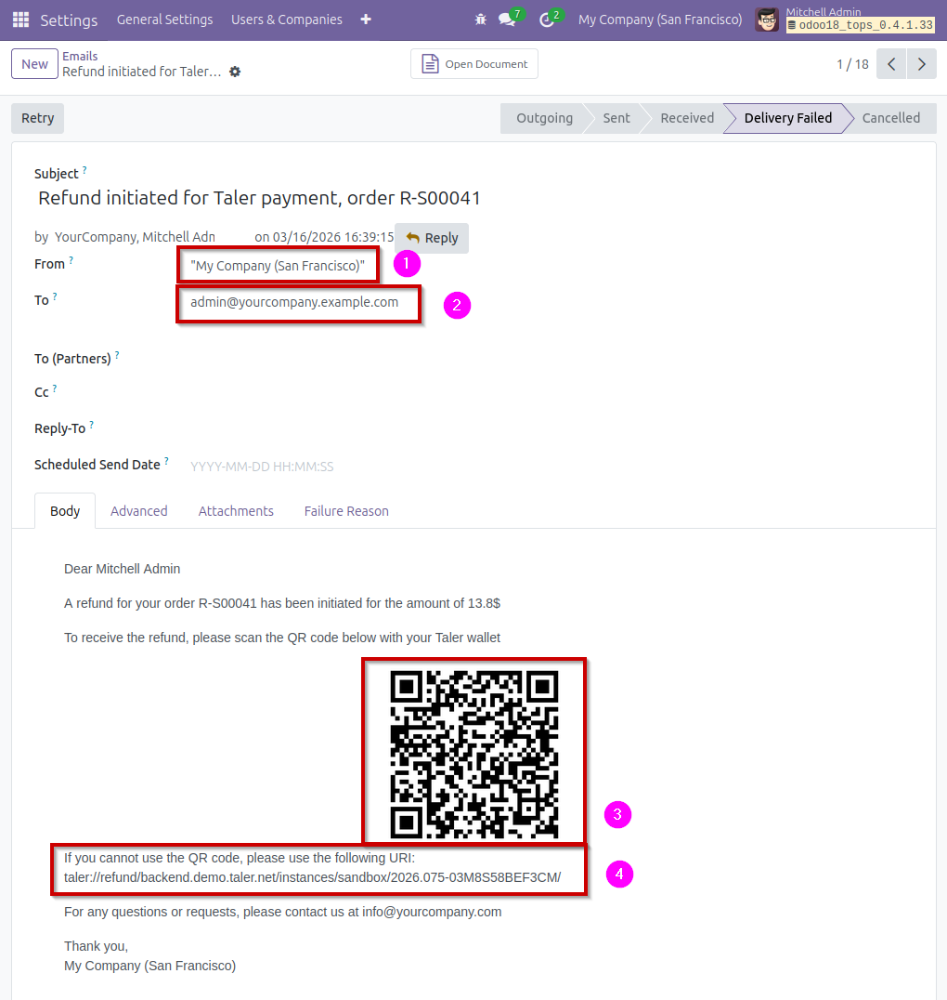
On the email page, you can see the email address it has been sent from (1) and to (2). You can also see the refund QR Code that has been sent to the customer (3), as well as the URI that can be used in case the customer cannot use the QR Code (4).
Create an invoice that includes a Taler QR Code¶
To make an invoice that displays a Taler QR Code as a payment option, you need to create an invoice, and specify Taler as the payment method.
{kind=link}
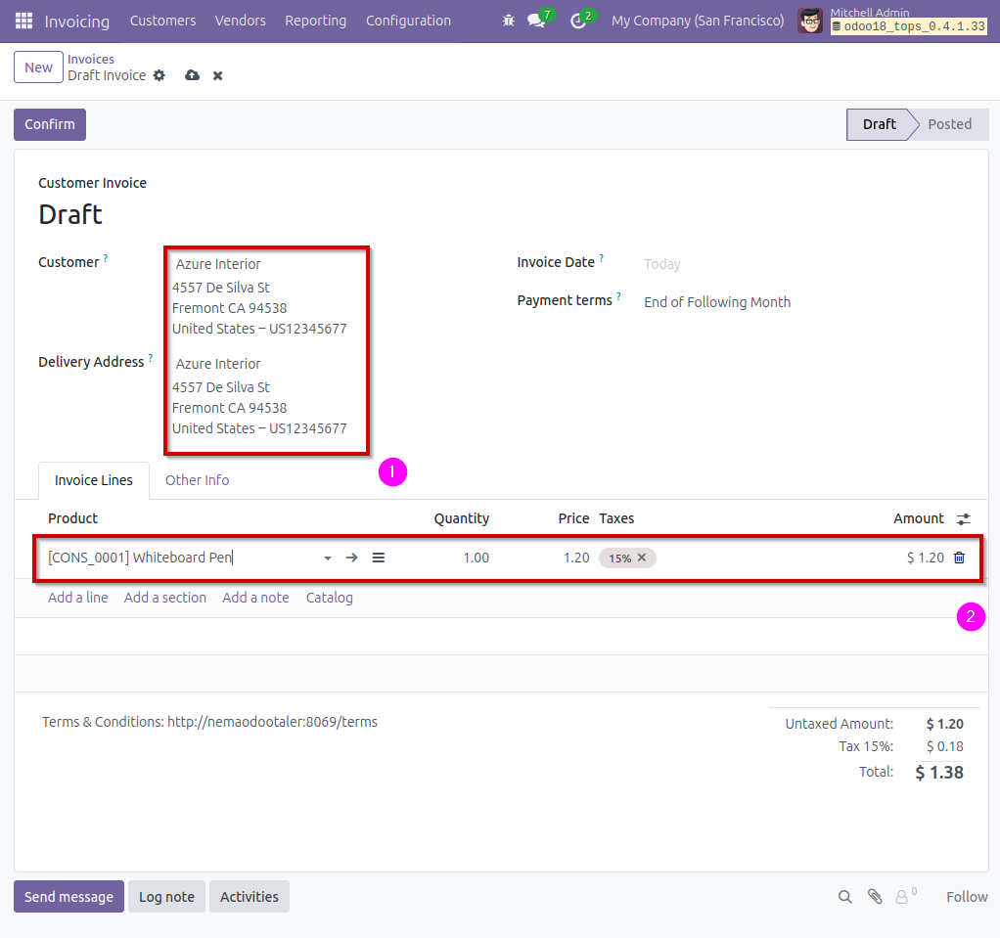
This is a new invoice with some data filled in, namely the customer data (1) and the invoiced product (2).
In the Other Info tab, you need to set the field Payment Method
to the value Taler. This indicates that you intend for the customer
to pay this invoice with Taler. (However, despite this setting, other
online payment options can still be used to pay for the invoice).
Once filled, you can Confirm the invoice and then see the
Preview of the invoice by clicking the corresponding buttons on the
top of the page.
{kind=link}
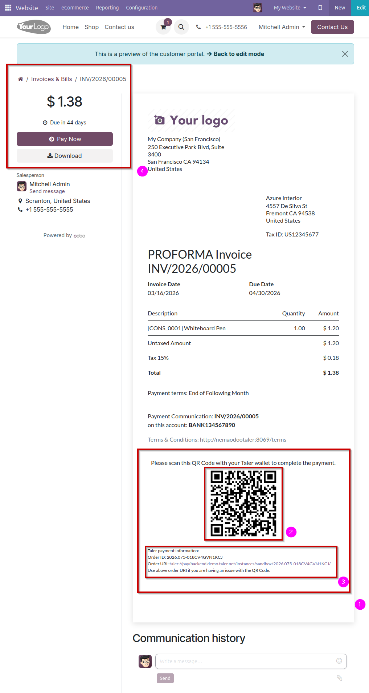
You can see the Taler section at the bottom of the invoice (1).
It wouldn’t appear if the Payment Method of the invoice was not
set to Taler. In this section, you can see the Taler QR Code that
can be used to pay (2), as well as the URI that can be used in case
the customer cannot use the QR Code (3).
On the top-left of the invoice, you can also see a Pay Now button.
This button allows the customer to pay via Online Payment, and clicking
it will start the Online Payment flow (4).
{kind=link}
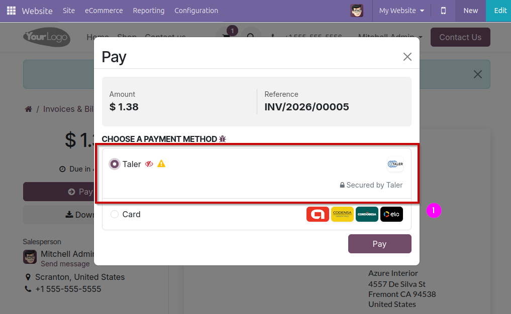
In this menu, the customer can choose to pay online with Taler (1).
Selecting this option will start the Online Payment flow that this add-on implements, as opposed to the invoice payment flow that would have been used if the customer paid using the invoice’s QR Code.
Point of sale payment setup¶
To setup Taler payment for the Point of Sale, you have to setup a new payment method in the POS app.
Go to Point-of-Sale -> Configuration -> Payment Methods and click
New.
{kind=link}
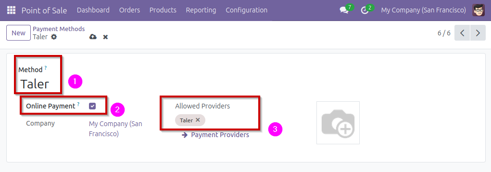
On this new Point of Sale payment method, set the name (Taler) (1),
tick the Online Payment option (2), and select Taler as an
Allowed Provider (3). The Taler payment provider must be
Enabled, or it will not appear in the list of available providers.
Note
This Taler payment method is specific to the point of sale, and is different from the payment methods created by default by this add-on.
Once this is done, you need to add this new payment provider to each
point of sale that you would like to use it in. To do that, go to
Configuration -> Point of Sales and click on the point of sale you
would like to edit.
{kind=link}
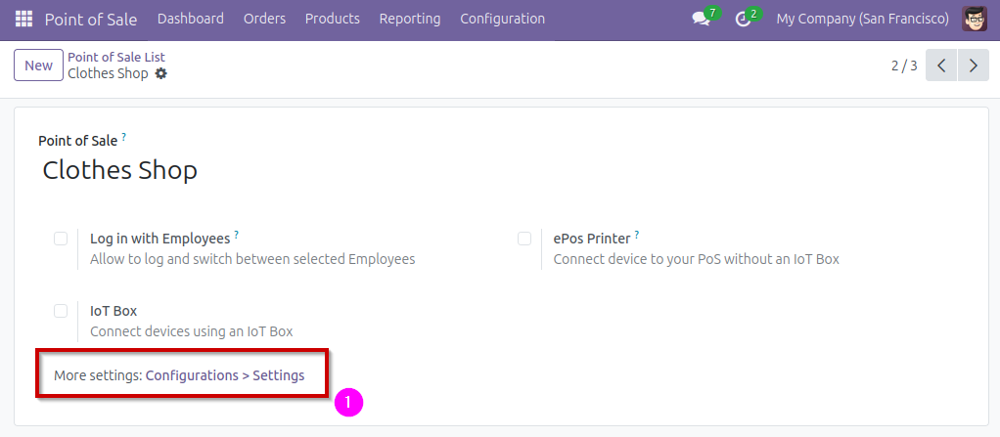
On this page, click on More settings: Configurations > Settings
(1) to be sent to the settings page for this point of sale.
{kind=link}
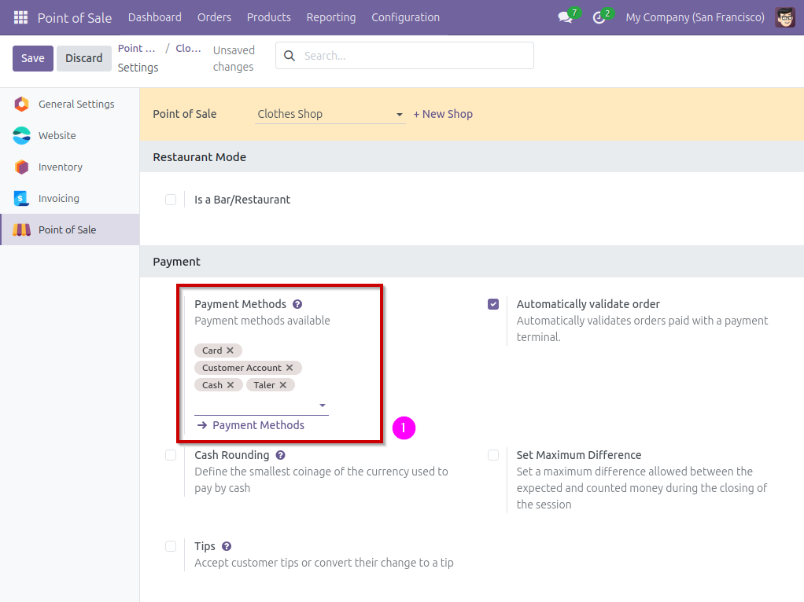
On the settings page, add to the setting Payment Methods (1),
add the new Taler payment method you created earlier.
After this you’re good to go for customers to pay on Point of Sales using Taler!
Point of Sale payments using Taler¶
Paying at a point of sale using Taler is straightforward and uses Taler’s online payment flow.
{kind=link}
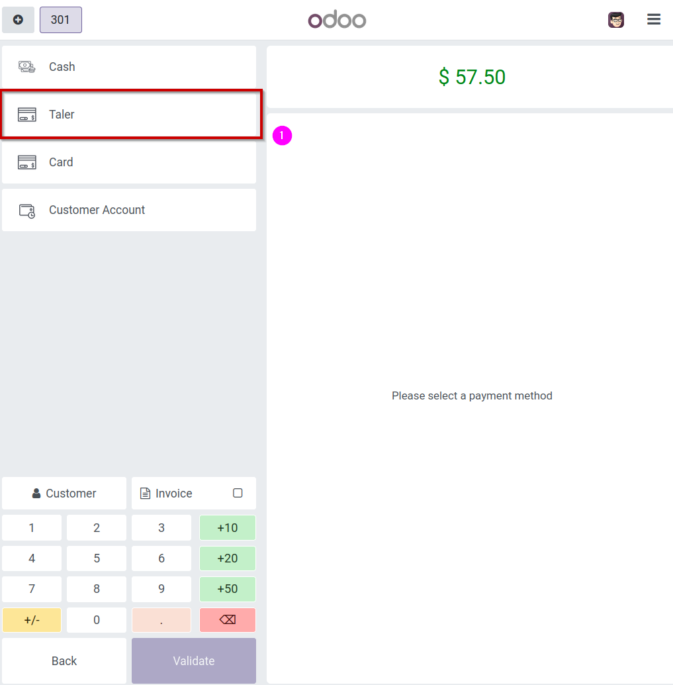
When a customer’s cart is finalized, press Payment and select
Taler (1) as a payment method, and validate.
{kind=link}
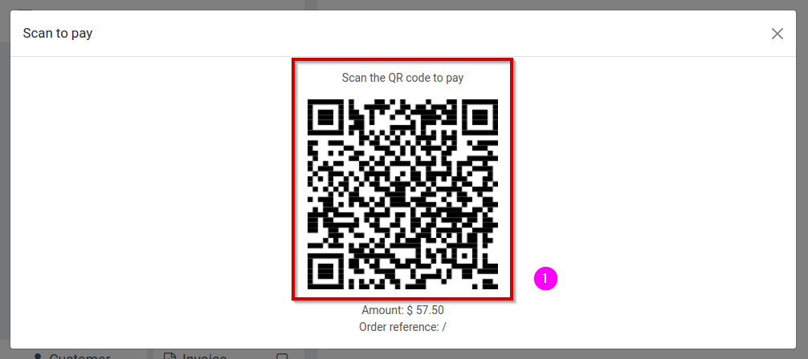
The customer will be presented with a QR Code (1), that they can scan to complete a payment via Taler.